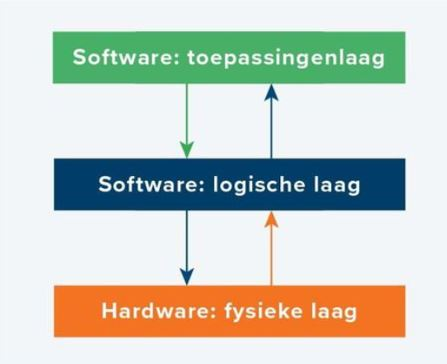

Een 3-laagsmodel bestaat hoe de naam al zegt uit 3 lagen. de fysieke laag, hier in staat bijvoorbeeld computer hardware , netwerk-hardware, randapparaten. Het bestaat ook uit een logische laag, hier in staan: de operating system, progameertaal/libraries. Als laatst hebben we de toepassingslaag met voorbeelden die hier instaan als: teksverwerkers en spreadsheet-progamma's. Door deze lagen zijn websites opgebouwd. Deze lagen zorgen voor het onder ander transport van informatie en hoe dingen op je computer er uit komen te zien. 